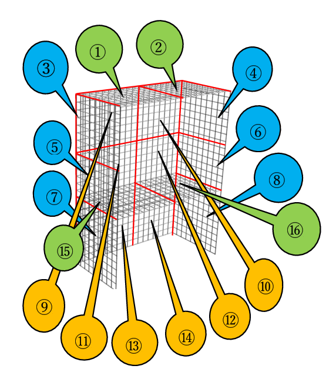

作品に合わせて、必要な面だけ。
委託棚 料金シミュレータ
あなたのキットや作品を、秋葉原の店頭へ。棚のサイズと展示に使う面を選んで、月々の費用を確認できます。
新規オーナーは初月の棚代0円月額・税込表示商品に直接さわれる展示
1. 棚のサイズを選ぶ
結束バンドを使用した棚のため、寸法には±10mm程度の誤差があります。
3Dで貸出面の位置を確認
ドラッグで回転、ピンチ・ホイールで拡大縮小。番号を押すと、その面を選択・解除できます。
3Dの棚を読み込んでいます…
天面側面背面水平面● 選択中は濃い色
番号は棚を正面から見た左右に対応します。
貸出面の番号図を見る

棚本体は提供CADデータを使用。色付きの面と区切りは料金プランの図に基づく位置の目安です。正確な利用範囲・設置方法は店舗にご確認ください。
2. 利用する面を選ぶ
チェックを入れると料金が更新されます。左右は棚を正面から見た位置です。
天面のご利用について
天面だけの契約はできません。①は③または⑨、②は④または⑩を選ぶと追加できます。対象の側面・背面をすべて外すと、対応する天面の選択も解除されます。
他の出展者の作品を隠さないよう、配置・大きさは事前にご相談ください。希望が重なる場合は店舗で調整します。